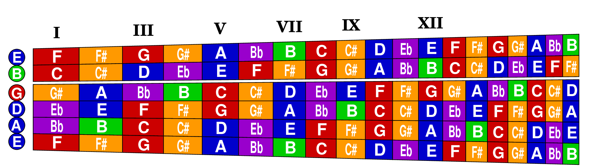

Chromatic Fretboard Exercises
For Guitar Sightreading
J. J. Olson

Contents
How to Use This Book
Musical Fretboard Diagrams
Coloring the Notes
Group A Exercises: Positions I and VII
Group B Exercises: Position I Lower Notes
Group C Exercises: Position VII Higher Notes
Group D Exercises: Position I Wide Range
Group E Exercises: Position V
Group F Exercises: Position IX
Group G Exercises: Position XII
Exercise Index
Name Index
Acknowledgements and References
IMSLP
Copyright © 2024 by J. J. Olson -- Freely available as
IMSLP-DRAFT
2024/04/02 under
Creative Commons Attribution 4.0 International License
-- free to distribute, modify and perform